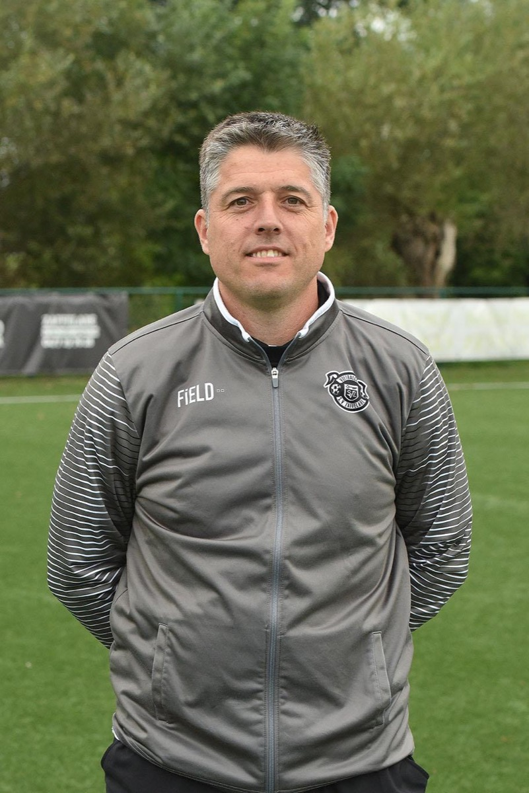

Over de club
SK Lochristi: blauw-wit, twee complexen en een jeugdwerking van U6 tot U21 die de eerste ploeg voedt.
Een club die zijn eigen spelers opleidt
Na het stopzetten van de ploeg in 3de amateur koos SK Lochristi voor een nieuwe koers. Met SK Lochristi 2.0 startte de club opnieuw in 3de provinciale, met een eerste ploeg die enkel uit eigen opgeleide spelers bestaat.
Die keuze bepaalt nog altijd hoe we werken. De sportieve cel senioren zit geregeld samen met de jeugdcoördinator bovenbouw om talent op te volgen. Beloftevolle spelers trainen eerst mee bij de A-beloften en de eerste ploeg, en krijgen daarna kansen in wedstrijden.
Zo bouwen we een eerste ploeg met spelers uit eigen opleiding, van rond de kerktorens van groot Lochristi.
Aan te vullen door de club: oprichtingsjaar en de vroege geschiedenis van SK Lochristi.
-
SK Lochristi 2.0
Doorstart in 3de provinciale met een eerste ploeg uit eigen opleiding.
-
2022–2023
Eén bestuur voor de hele club, van U6 tot en met de eerste ploeg. Seniors en jeugd houden elk een eigen sportieve cel.
-
2023–2026
Drie seizoenen in 2de provinciale. In april 2026 degradeert de eerste ploeg.
-
2026–2027
Nieuwe start in 3de provinciale C met Filip Cornelis als T1 en Andy Van Rysselberghe als T2.
Onze visie
“Samen plezant sportief voetballen”
De jeugdafdeling van SK Lochristi heeft als doel jeugdvoetbalspelers op te leiden, en dit in de breedste zin van het woord. Het doel van het jeugdbeleid is opleidingsgericht voetbal met het kind op de centrale plaats.
Iedereen, ongeacht zijn/haar niveau, is welkom op SK Lochristi. Om onze missie te kunnen vervullen steunen wij op 4 essentiële pijlers: opleiding, kindvriendelijkheid, fun en fairplay.
-
Opleiding
- Vormen van (voetbal)intelligente spelers
- Vormen van voetballers met een zekere persoonlijkheid
- Focus op individuele basistechniek, fysiek, tactiek en mentaal
- Aanvallend voetbal wanneer het mogelijk is, alsook verdedigend
-
Kindvriendelijkheid
Binnen de club wordt veel aandacht besteed aan een pedagogisch verantwoorde benadering van de speler. De opleiding dient steeds afgestemd te zijn op de individuele leefwereld van de leden en dient een bijdrage te leveren aan hun opvoeding.
-
Fun
Het is van het grootste belang dat de spelers zich thuis voelen bij SK Lochristi en met plezier afzakken naar de club. Het is minstens even belangrijk dat ook de ouders en familie zich thuis voelen in de club.
-
Fairplay
- Respect voor de speler
- Respect voor de tegenstander
- Wederzijds respect tussen trainers, begeleiders en bestuursleden
- Respect voor de andere clubs
- Respect van en voor de ouders en sympathisanten
Bestuur en staf
Eén bestuur voor de hele club, twee sportieve cellen: één voor de seniors en één voor de jeugd.
Eerste ploeg

Filip CornelisHoofdtrainer (T1)- Andy Van RysselbergheAssistent-trainer (T2)
- Danny Den HertAfgevaardigde
- Luc ViaeneAfgevaardigde en gerechtelijk correspondent
- Patrik Van de VeldeTerreincommissaris
Jeugdwerking
- Andy Van RysselbergheTechnisch verantwoordelijke jeugdopleiding (TVJO)tvjo@sklochristi.be
- Wesley QuatackerAssistent TVJO (AVJO)avjo@sklochristi.be
- Nico WiemeCoördinator bovenbouwbovenbouw@sklochristi.be
- Gert-Jan MoresCoördinator middenbouwmiddenbouw@sklochristi.be
- Tom De SutterCoördinator onderbouwonderbouw@sklochristi.be
Bestuur
- NaamVoorzitter
- NaamSecretaris
- NaamPenningmeester
Aan te vullen door de club: namen, rollen en foto's van het bestuur. Zonder foto tonen we de initialen.